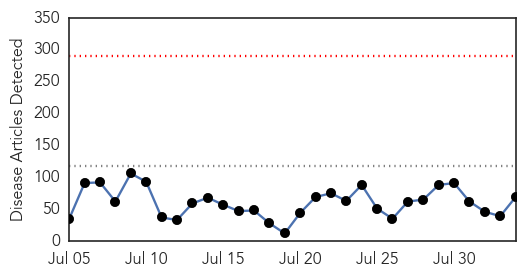
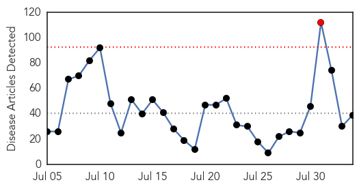

Unknown
30-Day Web Trend
0 alerts, 0 warnings

30-Day Twitter Trend
0 alerts, 0 warnings

Article Locations


Article Confidences

Top Articles:
- 0.995
- S. Korea's MERS cases, fatalities remain flat
- 0.991
- 4 dead and 65 sick from Legionnaires' disease outbreak in NYC
- 0.990
- 4 dead, 65 infected, New York City on alert
- 0.985
- 5 Things to Know About Legionnaire's Disease After 7 Deaths...
- 0.985
- 4 Dead, 55 Hospitalized in Outbreak of Legionnaires' Disease in New York
- 0.971
- Bacteria detected in cooling systems after hospitalizations, deaths in the Bronx.
- 0.961
- Salmonella illness outbreak may be linked to pork
- 0.954
- Bronx Legionnaires’ Outbreak Kills 4, Sickens 67 -- NYMag
- 0.949
- Washington's Salmonella outbreak increases to 90 cases
- 0.929
- St John of God Geelong gastro outbreak contained
- 0.927
- ‘Travel time to hospital a concern’
- 0.917
- Chicago Tribune
- 0.917
- Chicago Tribune
- 0.917
- Chicago Tribune
- 0.917
- Chicago Tribune
- 0.917
- Chicago Tribune
- 0.903
- Health department confirms Purdue hantavirus case
- 0.888
- Monsoon presses disease alarm
- 0.886
- Bronx residents in fear over Legionnaires' disease
- 0.880
- 71 Reported Cases Of Legionnaires' Disease So Far
- 0.866
- A masked man stands next to an excavator as it digs trenches in the Islamic State-held Syrian town of Jarablus as seen from the Turkish border town of Karkamis
- 0.857
- Simple explanation for patient who caused Kentucky ER lockdown
- 0.828
- FDA says investigating latest cyclosporiasis outbreak
- 0.796
- Virginia Mason failed to properly report ‘superbug’ outbreak, state says
- 0.747
- Fourth Person Dies Following Outbreak of Legionnaires' Disease
- 0.728
- Four people dead from Legionnaires' disease in New York
- 0.712
- Rhode Island mandates HPV vaccine for seventh-graders
- 0.711
- Texas A&M Entities Helping Understand, Monitor Chagas Disease
- 0.684
- Public Health Nurse of the Year- Lori Hendrickson
- 0.677
- Kosovo votes for new war crimes court
- 0.677
- Some 6,000 homes evacuated as wildfires ravage California
- 0.677
- US airpower to defend Syrian rebels, including from Assad forces
- 0.677
- In pictures: Raging wildfires prompt evacuations in California
- 0.677
- Obama to unveil 'biggest step ever' in climate fight
- 0.677
- Obama takes action on climate change with tough Clean Power Plan
- 0.677
- Nigerian troops free 178 Boko Haram captives
- 0.677
- Jury paves way for Colorado gunman to face death penalty
- 0.677
- Jewish extremist leader arrested after anti-Arab violence
- 0.677
- In pictures: Child refugees’ photos come to Paris
- 0.677
- Volunteers defy Hungarian govt to welcome migrants
- 0.677
- High speed train collides with tractor in Western France
- 0.677
- Monitors report ‘hundreds’ of civilian deaths from coalition strikes
- 0.677
- Gunmen shoot leading Burundi human rights activist
- 0.677
- AFP correspondent in Burundi detained and beaten
- 0.673
- Typhoid Spreads Throughout Yarmouk Camp, Doctors Warn of Epidemic
- 0.665
- Editorial: Flu jab rebels should get another job
- 0.660
- Nightmare across five states as flooding and landslides claim 101 lives and leave lakhs homeless
- 0.658
- Fake Laboratories worsening ill health and ruining lives
- 0.658
- Cyclospora cases grow and Salmonella investigations continue
- 0.650
- 32 Human Samples from Brucellosis-Hit Town of Rila Sent for Testing
Showing top 50 articles...
Top Tweets:
-
No tweets found for Aug 03, 2015
Ebola
30-Day Web Trend
1 alerts, 0 warnings

30-Day Twitter Trend
0 alerts, 0 warnings

Article Locations

Article Confidences

Top Articles:
- 1.000
- WHO declares end of Ebola outbreak in Sierra Leone, but neighbor Guinea struggles to end virus
- 1.000
- Will Ebola Vaccine Be The Cure Africa Needs?
- 1.000
- Sierra Leone records two new cases of Ebola
- 1.000
- Sierra Leone concerns grow from new case, as CDC head visits
- 1.000
- Sierra Leone Concerns Grow as CDC Head Visits
- 0.999
- Ebola vaccine completely effective, say researchers
- 0.999
- CDC head says Sierra Leone in strong place with Ebola
- 0.999
- A look at Ebola treatment in the US by numbers
- 0.998
- Kaleidoscope of the International Conference on Africa’s Fight Against Ebola, Malabo, Equatorial Guinea
- 0.997
- Ebola vaccine appears to be highly effective, could be ‘a game-changer’ — Health — Bangor Daily News — BDN Maine
- 0.997
- How the global community fast-tracked an ebola vaccine
- 0.997
- Breakthrough in quest for Ebola vaccine
- 0.996
- Norwegian-led Ebola vaccine study shows promising results in Guinea
- 0.995
- After Ebola criticisms, WHO plans for 4-month epidemic response
- 0.994
- Ebola vaccine trial successful in Guinea SouthEast ASIA News
- 0.994
- Vaccine success holds hope for end to deadly scourge of Ebola
- 0.991
- Ebola Outbreak Again in Sierra Leone; 624 People Quarantined Following A Death
- 0.990
- Ebola Vaccine Works, Offering 100% Protection In African Trial
- 0.990
- Ebola Vaccine Hailed As 'Game Changer' In Fight Against The Virus
- 0.987
- A new Ebola vaccine shows promise. But there's good reason for caution.
- 0.986
- Rebuilding African Societies Is The Long Term Solution To The Healthcare Crisis
- 0.986
- CDC's top modeler courts controversy with disease estimate
- 0.985
- Good News! Ebola Vaccine Works, Offering 100% Protection In African Trial
- 0.984
- Ebola vaccine shows promising results
- 0.978
- Ebola Prevention Vaccine Trial Deemed 100 Percent Effective
- 0.976
- Ebola: The Transformation of Redemption Hospital
- 0.960
- Dr. Rashida Kamara Distributes IPC Supplies to Hospitals
- 0.948
- Study will test survivors’ blood to treat Ebola
- 0.946
- World on the verge of an effective Ebola vaccine
- 0.914
- Promising Results from Ebola Vaccine Trial
- 0.866
- Restore Hope is hosting post Ebola strategies summit in Texas
- 0.856
- More than 70,000 children born during the Ebola outbreak in Liberia at risk of exclusion if not registered, warns UNICEF
- 0.834
- A little girl in Liberia has thanked science for Ebola vaccine
- 0.775
- Red Cross radio helps communities in Guinea guard against Ebola
- 0.755
- Offices inside Woodbridge medical building quarantined during Ebola scare
- 0.745
- Welcome to the Expotimes News
- 0.577
- Border Officials Receive Training in Ebola Prevention
- 0.564
- The Deceptive face of Religion in Sierra Leone
- 0.546
- Ellen extols members of the Diplomatic Corps
Top Tweets:
- 0.937
- WHO meeting on survivors of Ebola virus disease: Clinical care research and ... - World Health O... http://t.co/szvyu98HdC ebola EVD
- 0.914
- In August 2014: Some Nigerians had their bath with SALT & WATER to PREVENT Ebola 2 Deaths were recorded & the Ebola response plan changed.
- 0.890
- A Legionnaires Disease Outbreak An Ebola “Game-changer” and more from Doctor ... - WGN Radio http://t.co/a623Q6lnUb ebola EVD
- 0.813
- WHO meeting on survivors of Ebola virus disease: Clinical care research and ... - World Health Organization http://t.co/E1VQjHoAhr
- 0.798
- CDC head says Sierra Leone in strong place with Ebola - Yahoo News http://t.co/hg42pooXov ebola EVD
- 0.798
- CDC head says Sierra Leone in strong place with Ebola - Yahoo News http://t.co/0d3VQJVaic ebola EVD
- 0.778
- Sierra Leone's Ebola aid workers bear the deep mental scars of haunting deaths - The Guardian http://t.co/LlHWseNSvQ ebola EVD
- 0.775
- CDC head says Sierra Leone in strong place to deal with Ebola as concerns grow ... - U.S. News & W... http://t.co/j6l6csu3N2 ebola EVD
- 0.759
- A little girl in Liberia has thanked science for Ebola vaccine - Irish Examiner http://t.co/SmDW7XzXE2 ebola EVD
- 0.747
- Head of CDC in Sierra Leone as concerns grow from new Ebola case - CTV News http://t.co/Snn8teMTRV ebola EVD
- 0.747
- Head of CDC in Sierra Leone as concerns grow from new Ebola case - CTV News http://t.co/Ce65G6D97L ebola EVD
- 0.700
- OraSure lands emergency authorization for Ebola test - WFMZ Allentown http://t.co/34rL2vfxAC ebola EVD
- 0.696
- RT: An Ebola vaccine will not eradicate the disease but will likely be a key tool in future outbreaks. Read ECDC comment http://t…
- 0.668
- RT: Ebola outbreak tied to increase in untreated malaria cases in West African nation of Guinea.. @EbolaAlert http://t.co/7JUqp…
- 0.638
- FDA grants OraSure key status for rapid Ebola test - Allentown Morning Call http://t.co/k2ivh41l4q ebola EVD
- 0.574
- The Race to Zero: Looking for the Last Ebola Patients in Liberia - VICE News http://t.co/aHvM01WsqE ebola EVD
- 0.557
- HuffPost What's Working Honor Roll: We May Finally Have An Ebola Vaccine That ... - Huffington Post http://t.co/ZJfps8iGBq ebola EVD
- 0.526
- A Brief Look At Guinea Liberia and SierraLeone in Tackling the Ebola Health Crisis http://t.co/IxitmEDm6Z liberia via
- 0.502
- Orasure Technologies Receives FDA Emergency Use Authorization for Ebola Rapid ... - Nasdaq http://t.co/9idzAxoiWC ebola EVD
- 0.502
- Orasure Technologies Receives FDA Emergency Use Authorization for Ebola Rapid ... - GlobeNewswire ... http://t.co/rPNUkryjY9 ebola EVD
- 0.500
- Ebola testing kit developed in Dundee factory - The Courier http://t.co/XOAgPW8vBQ ebola EVD